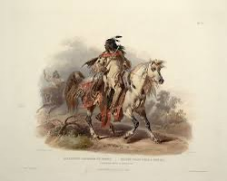

The Story of Napi the Trickster. A Blackfoot Legend. I want to tell an old history about Napi. Napi chose a large area of land, East of the Rockies. He put on there, all the different animals that walk on mother Earth, the water animals, the ones that fly. He built the rivers and landmarks in this area and they were all named in Blackfoot.